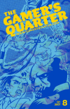
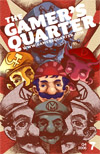
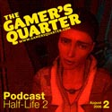
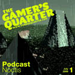
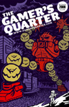
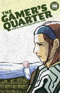
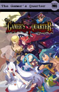
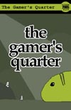
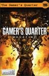
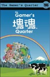

The Gamer's Quarter magazine is a quarterly publication produced by a group of passionate gamers with the desire to create a videogame magazine like no other.
If you have any questions, please take a look at our Frequently Asked Questions page.
(0)
Comments
|
|
GAMER'S QUARTER FORUMS AREN'T DEAD
They just currently live here and nobody's posted on them since 2011.
Signups are turned off because the spam problem is literally what killed the forums. So I hope you remember your password!
-- Much love, ApM
|
Without further delay, Issue #8 of our fine magazine is finally available for download as a full-length PDF preview. Check it out by clicking here, and if you like what you read please visit our shop to purchase a hard copy. Hard copies are more book than magazine, and at $5 plus shipping each issue is an incredible value. Within the 77 pages of Issue #8 you'll find 18 articles covering Capcom games, special Tokyo Game Show coverage, The Secret of Mana, Metroid II, Wii Line antics, Rule of Rose, a guest appearance from the writer of Game Time With Mister Raroo, and much, much more! You'll also find tons of original artwork, including a CAPcomic and a very blue cover by Toronto artist Benjamin Rivers! Regardless of what you think of the magazine we'd love to hear about it, so please click the comments button below and let us know. We don't always say it, but thank you everyone for your support.
On the Grand Master's Stage - Ancil Anthropy
Strider - ARC
Goading 'n Gouging - Matthew Williamson
Ghouls 'n Goblins series
That Spiky-Haired Lawyer is All Talk - Jeremy Penner
Phoenix Wright: Ace Attorney - NDS
Shinji Mikami and the Lost Art of Game Design - Jonathan Simpson
Resident Evil - PS1; P.N. 03, Resident Evil 4 - NGC; God Hand - PS2
Secrets and Save Points - Heather Campbell
Secret of Mana - SNES
Giving Up the Ghost by J.R. Freeman
Metroid II: Return of Samus - NGB
I Came Wearing a Full Suit of Armour But I Left Wearing Only My Pants - James Harvey
Comic
Militia II is Machinima by Steven Schkolne
Militia II - AVI
Mega Microcosms by Ancil Anthropy
Warioware series
Persona Visits the Wii Line by Jonathan Kim
An Illustrated Campout for the Wii
Christmas Morning at the Leukemia Ward by Brendan Lee
Tokyo Game Show 2006
A Retrospective Survival Guide to Tokyo Game Show - Rudie Overton
With Extra-Special Blue Dragon Preview
You've Won a Prize! - Tim McGowan
Deplayability
Knee-Deep in Legend - J.R. Freeman
Doom - PC
Killing Dad and Getting it Right - Justin Boley
Shadow Hearts - PS2
The Sound of Horns and Motors - M. O'Connor
Fallout series
The Punch Line - Ancil Anthropy
Rule of Rose - PS2
Untold Tales of the Arcade - Francesco-Alessio Ursini
Killing Dragons Has Never Been So Much Fun!
Why Game? - Mister Raroo
Reason #7: Why Not!?
Available NOW!
(31)
Comments
|
Issue #7 of our fine magazine is now available for download as a full-length PDF preview. Check it out by clicking here, and if you like what you read please visit our shop to purchase a hard copy. Hard copies are closer to a book than a magazine, and at $5 plus shipping each issue is an incredible value. Within the 107 pages of Issue #7 you'll find 22 articles covering various Mario games, the Final Fantasy series, Dead Rising, the Japan-only Bit Generations series of GBA games,a series of Haiku about Dragon Warrior VII, and much, much more! You'll also find gobs of original artwork, including a comic that takes a unique look at the modern videogame store and an absolutely insane cover by Indianapolis artist Max Martin! Regardless of what you think of the magazine we'd love to hear about it, so please click the comments button below and let us know. We don't always say it, but thank you everyone for your support.
Breaking the Law of Miyamoto - Jeremy Penner
Super Mario Bros.-NES
For Super Players - Ancil Anthropy
Super Mario Bros. 2-FDS, SNES, GBC
Play a Friend�s New Super Mario Bros. - Wes Ehrlichman
New Super Mario Bros.-DS
Out of the Valley - Matthew Williamson
Great Abstractions in Videogames
To Be Frank - Andrew Toups
Dead Rising-360
The Unintended Horror - Chris St. Louis
Fear in Games
Let Your Momma Sleep! - Francesco-Alessio Ursini
Jet Set Radio-SDC
There�s More to Gaming than Just Gaming - Erica L. Van Ostrand
Gaming in South Korea
Behind the Green Door - M. O'Connor
The Xbox 360 Uncloaked: The Real Story Behind Microsoft�s Next-Generation Video Game Console-TXT
Dark Oddysey - Matthew Williamson
Sound Voyager-GBA
A Day in the Life of R-Ko, Gamestore Employee - Jonathan Kim
Comic
Haiku for Dragon Warrior VII - Tim McGowan, John Overton, Eric-Jon R�ssel Waugh
Dragon Warrior VII-PS1
Faith & Fantasy - Heather Campbell
Final Fantasy Series-NES, SNES, PS2, GC, 360, GB, GBA, WIN, DS
Effeminaphobia and Male Intimacy: Far Cry Only Worries when the Jungle Drums Stop - M. O'Connor
Far Cry-WIN
Mushroom Hunting in Heels - Matthew Collier
Violence in Videogames
Use Your Illusion - Amandeep Jutla
Final Fantasy, Game Design, and Me
Zen Type - Matthew Williamson
Ridge Racer-PS1, PS2, PSP, 360
High Calibur - John Overton
Soul Calibur, SDC
The Next Next-Gen - Craig Dore
Back to the Future
Mommy, Where Does Novelty Come From? - M. O'Connor
A Parable
Untold Tales from the Arcade - Francesco-Alessio Ursini
The Battle for the Kingdom Continues!
Why Game? - Sergei Servianov
Reason #6: Nostalgia
Available NOW!
(25)
Comments
|
It's been a month since our first podcast, so here goes number 2. In this episode, Matthew Williamson, Benjamin Rivers, Andrew Toups, J.R. Freeman, and M. O'Connor discuss the seminal PC title Half Life 2 and its unique qualities and shortcomings. The podcast can be downloaded here, and the cover here. Stay tuned after the podcast to learn how you can win a copy of Blade Dancer: Lineage of Light for the PSP!
Our staff is currently busy finishing up their articles for our next issue which is due in mid-September. Please remember to check back then, or just sign up for our mailing list in that little "mailing list" section to the left. We should mention that there are a few technical issues with this podcast. We thought about redoing the whole thing, but didn't feel that the issues were bad enough to try to artificially recreate the conversations that went on. O' Connor has done a great job of cleaning things up, but if you still want to complain or have any other, more positive feedback, please click Comments and let us know what you think.
(48)
Comments
|
Welcome to the first TGQ Podcast, where The Gamer's Quarter staff discuss an interesting or significant game on months between magazine releases. In our first show, M. O�Connor, J. R. Freeman, Ancil Anthropy, and Brandon Richard discuss the freeware title Noctis, a space exploration simulator that's tremendously vast and surprisingly lonely. Download the podcast right here, and the cover here. When you're done listening you can download the "game" from its website, you might also want to check out our Omake photo gallery.
Our next podcast, due in mid-August, will tentatively cover Half-Life 2. Check back then or sign up for our mailing list in that little box to the left of here. We're moving into new territory here, and any feedback is appreciated so please click on the "Comments" field below and lets us know what you think.
(28)
Comments
|
The full-length preview PDF of The Gamer's Quarter #6 is now available for download here. If you like what you read, we encourage you to pre-order a physical copy from our store. When books are ready for shipping in mid-July you'll recieve a high-quality book-format edition of this 121 page issue with a full-color cover by staff artist Mariel Cartwright. Every pre-ordered issue will include one of five free bookmarks (collect them all)! If you're not here because of the e-mail you recieved from being part of our mailing list, well, you should be. So please enter your e-mail address into the mailing list section on the left side of this page to sign up for our infrequent updates. We've got something special coming up some time within the next month that you won't want to miss out on and the best way to make sure you're kept in the know is to be a part of our mailing. This issue shows off our intriguing new design and contains an interesting look at cell-phone gaming as well as our E3 coverage. If, for some reason, you're still reading this and haven't clicked on the link to download the preview yet, you might as well check out the article list below:
A Medium of Moments - Matthew Collier
Mobile Gaming
The N-Gage is Dead; Long Live the N-Gage - Wes Ehrlichman
Nokia; N-Gage
Medium Possibilities - Ash and Dan Pringle
The Music of Double Dragon 2
Console Identity - Heather Campbell
Sega - SMS, GEN, GMG, SCD, SAT, SDC
Crossing the Boobicon - M. O’Connor
The Physics of Heavenly Bodies
Your Mileage May Vary - Marc Spraragen
Videogame Transportation
Death in the Impasse Valley - Ancil Anthropy
Fushigi no Dungeon 2: Furai no Shiren - SNES
Persona Visits E3 - Jonathan Kim
Impressionistic Impressions of E3: 2006 Edition
An E3 Survival Guide - Andrew Toups
Los Angeles, 2006
Hard Drive Optional - Heather Campbell
E3 Survival Guide
How to Get Back Into E3 - Mathew Kumar
E3 Survival Guide
E3: Unwrapped - Colin Booth
E3 Survival Guide
The Drinks Are on Keith - Matthew Williamson
Intellivision Party - E3
Mechanical Donkeys - John Szczepaniak
M.U.L.E. - A800, C64, NES, PC
A Broken Robot at the End of the World - Chris St.Louis
Planetarian: The Reverie of a Little Planet - PC
Worship the Glitch - M. O’Connor
The Elder Scrolls IV: Oblivion - WIN, 360
In on the Auction - Marco Michilli
A Letter to SCEA
A Brief Note on Pacing in Videogames - J.R. Freeman
The Soul of Wit
Untold Tales of the Arcade - Francesco-Alessio Ursini
Stand-Up Role-Playing Games
Stay Awhile, Stay Forever! - Paul Lilly
Further Adventures in the British Games Press
Why Game? - Francesco-Alessio Ursini
Reason #5: Scoring Culture
Available NOW!
(13)
Comments
|
The Gamer's Quarter #5 is now available for download here. If this enormous 114 page monster of goodness, with a gorgeous cover from Dave Hellman, has too many pages to read online you can, of course, order a physical copy of Issue #5, which is shiping NOW, by clicking right here. Every pre-ordered issue will include a free sticker (sticker type undecided at this time)! I know you want to know when new issues are released, so please enter your e-mail address into the mailing list section on the left to sign up for infrequent updates. This issue has more articles than ever, covering diverse subjects as Contra, Contra, and Contra! But don't take my word for it, check out this article list:
A Hymn to the Hard Corps - Sergei "Seryogin" Servianov
Contra: Hard Corps--GEN
I Shoot Therefore I AM - Francesco-Allesio "Randorama" Ursini
Contra--ARC, NES, SNES, GEN, PS2 (MSX)
The Real Next Generation - J. R. "Mr. Mechanical" Freeman
Ultimate Spider-Man and the Future
Seen It All in a Small Town - ancil "dessgeega" anthropy
Animal Crossing: Wild World--NDS
She Is Freed - Matt "ShaperMC" Williamson
Rez--PS2, SDC
The Vicissitudes of Hot-Rod Machismo as Applied to Graphics-Card Message Boards - M. "dhex" O'Connor
Building Your Own PC
Lucid Dreaming - Heather "Faithless" Campbell
Final Fantasy XI--PS2, WIN, 360
Input as Metaphor - "David" Hellman
Describing "Walk"--3 Credits, Fall
Convergence of Times - John "Szczepaniak"
Outrun 2--XBX (Modified)
Every System an Island - Colin "Wilkes" Booth
Console Systems
Phoenix Wright and the Turnabout Hair-Burger
Comic by Mariel "Kinoko" Cartwright and Jonathan "Persona-Sama" Kim
The Road to Sorrow is Paved with Happy Points - "Super" Wes Ehrlichman
Chibi-Robo--GCN
Futurist Concerto - Sergei "Seryogin" Servianov
Journey to Silius--NES
Total Ellipsis of the Heart - Tim "Swimmy" McGowan
. . .
My Eyes Are Blue, But I Know Samurai's Spirits - Chris "friedchicken" Harback
Samurai Showdown--ARC, NEO (PS1, XBX, PS2)
Please Give Tim Schafer Your Money - Jeremy "ApM" Penner
Psychonauts--XBX, PS2, WIN
Running the Shadows - John "Szczepaniak"
Shadowrun--GEN, SNES, SCD
Love Love Advance - ancil "dessgeega" anthropy
Advance Guardian Heroes--GBA
Untold Tales of the Arcade - Francesco-Alessio "Randorama" Ursini
Konami's Finest
This Is a Note and I Strum It - Scott "GilloD" Stephan
Guitar Hero--PS2
Chasing Ghosts
Comic by Benjamin "Lestrade" Rivers
A Defense of Silent Hill 3 - John "Rud13" Overton
Silent Hill 3--PS2, PC
Online Phobia - Brian "TheRumblefish" Roesler
Gaming Online
Shadows - Brian N. "Antitype" Wood
Shadow of the Colossus--PS2
Not New Games Journalism Manifesto - J. R. "Mr. Mechanical" Freeman
The Last Time The Gamer's Quarter Talks about New Games Journalism
Why Game? - M. "dhex" O'Connor
Reason #4: Roger Ebert Don't Stress Me
Available NOW!
(40)
Comments
|
The Gamer's Quarter #4 is now available for free download here. If long downloads and eye strain ain't your thang, you can now pre-order a physical copy of Issue #4, which is scheduled for release in mid-January by clicking right here. Pre-order now and recieve a free sticker! If you haven't already done so, don't forget to enter your e-mail address into the mailing list section on the left to receive updates on when new issues of The Gamer's Quarter are released in either print or online versions. We're learning to be more concise with this issue without losing any of Trademark TGQ flavor. The fourth iteration of our fine publication features the following totally serious gaming journalism:
Shadows of an Art Form - Mr. Mechanical
Shadow of the Colossus - PS2
The Hero and the Sleeping Woman - JMG114
Myth and Good Storytelling in Video Games
Remembering Zelda II - The Great St. Louis
The Adventure Of Link, 15 Years Later
Riven is Probably my Favorite Game Ever - Ajutla
Riven - MAC, PC, PS1, SAT
Controller (R)Evolution - dessgeega
Nintendo, my mother, and the future of videogames.
We Must Free The Things We Love - dhex
We <3 Katamari - PS2
Wall-Jumping for Kicks - Swimmy
Super Metroid - SNES
Good Old-Fashioned Family Fun - KaterinLHC
Video Game Championship of the World
Show Me Something Gorgeous - Mister Toups
A Brief Analysis of Videogame Aesthetics
Metal Gear Crossing - Persona-sama
Furniture Collecting Action!!
Interview with Greg Costikyan - dhex
Manifesto Games
Awakenings - Ajutla
NO$GMB - Gateway PC
Doubting Heroes - Faithless
God Of War - PS2
A MIGHTY SWORD AGAINST THE BACTERIAN. THE STORY OF GRADIUS THE ALMIGHTY - Randorama
A RETROSPECTIVE ON THE LEGEND OF PLANET GRADIUS, THE BACTERIAN, AND THE LAST 20 YEARS OR SO OF OPTIONS AROUND THE SCREEN
Arcadia of my Youth - Seryogin
On Japanese Role-Playing Games and Life
Ambidextrous Ambiance - ShaperMC
Beatmania - Arcade, PS1, PS2
Love Love Dance- dessgeega
Gunstar Super Heroes - GBA
Furries: Hedgehog Hodgepodge - Rabeewilliams
Influences for a Hedgehog
The Gamer's Quarter Accepts its First Bribe - SuperWes
Street Fighter Alpha: Generations - DVD
The Doom Generation - Mr. Mechanical
Fast, Hard and Brutal, Like Doom Was, But Not Really
The Happiest Time of My Life - Pat the Great
Chrono Trigger - SNES, PS1
Why Game? - Swimmy
Reason #3: Analysis
Available NOW!
(3)
Comments
|
The Gamer's Quarter #3 is now available for download here. As always, enter your e-mail address into the mailing list section on the left to receive updates on when you can purchase a physical copy of The Gamer's Quarter. Yeah, it didn't happen before, but as they say, "third time's the charm." With 26 articles spread over 128 pages you'll have a lot to do while you wait! We keep getting bigger, and I think you'll find that we keep getting better too. Just check out this article list:
How Nippon Ichi Saved My Life - TOLLMASTER
Disgaea, Phantom Brave, Makai Kingdom - PS2
Phantom Publisher - ShaperMC
An Interview With NIS America
Soldier of Lost Fortune - SFC
Missing a Once-in-a-Lifetime Opportunity
Within the Shell of a License - SuperWes
Ghost in the Shell: Stand Alone Complex - PS2
We Shall Meet in the Place Where There is No Darkness - dhex
Half-Life 2 - PC
Anomoly Discrimination Force S^2 - Persona-Sama
Chapter 02: The Coparcener
A Calculated Assault on Starcraft and All it Stands For: Why I Am Not a Gamer - ajutla
Starcraft - PC
Speed Runs and You - dessgeega
I Like to Watch
A Story of Fable - JaconKin
Fable - Xbox
Guilty Pleasures XXX - Persona-Sama
Welcome to the Guilty Gear!
Innovation in Game Design - The Gamer’s Quarter Staff
An Exercise in Creativity by The Gamer’s Quarter Staff and Their Friends
Suicide Salaryman - SuperWes
Game Design #1
Skylarking - Winker
Game Design #2
Project FTL - Dark Age Iron Savior
Game Design #3
An RPG Without Saves - Szczepaniak
Game Design #4
Real Dog vs. Nintendog (Real Dog Wins) - SuperWes
Nintendogs - NDS
“at how many komas do jou get gogeta?” - ShaperMC
Jump Superstars - NDS
Life, Non-Warp: DX - 108
Super Mario Bros. 3 - NES
Killer 7 - TableSaw
Crossword
Untold Tales of the Arcade 3: Taito Think Tank - Randorama
A Look Into Old and Obscure Arcade Games
The Gamer’s Quarter EXCLUSIVE Preview of The Legend of Zelda: Twilight Princess - Mister Toups
The Legend of Zelda: Twilight Princess - NGC
Frustration in an Aerial Fantasy World - Szczepaniak
SkyGunner – PS2
Open Letter to Rockstar - dhex
Hot Coffee Controversy
Reaching Adulthood Through Street Fighter 2 - Pat the Great
How I Learned to Love the Fight
Raystorm and Its Legacy - Randorama
Rayforce, Raystorm, Raycrisis - AC
In a Sea of Intellectual Property, Pirates Arise - ShaperMC
Morality and Emulation on the PSP
Why Game? - Szczepaniak
Reason #2: Internationalism Available NOW!
(5)
Comments
|
The Gamer's Quarter #2 is now available for download here. Please enter your e-mail address into the mailing list section on the left to receive updates on when you can purchase a physical copy of The Gamer's Quarter Issue 2. This issue features 112 pages of content spread over 18 articles. It's our biggest and best issue ever! Just check out this article list:
The Creation of a New Style, Giant Fish and the Fight for Survival - Randorama
A Darius Retrospective
Four Games - seryogin
From Russia to New York via Games
Important Failures in Videogame History - ApM
The Pre-History of Video Gaming
In Which I Discover That The King of Fighters is Really Pretty Great - Ajutla
In a Way That Mortal Kombat Isn't, I Mean.
It’s a Gamer's World Out There - Szczepaniak
A Different Perspective
Light at the End of the Tunnel - Sushi d
Cave Story - Doukutsu Monogatari
Logging Out of a Matrix Called Halo 2 - Stash
Halo 2
Nerves of Steel in Battalion Hell - Szczepaniak
Steel Battalion
New Advice Journalism - dhex
Keep Your Fonzie Offa My Gonzo
Oh What a Difference an Eyebrow Can Make - SuperWes
An Interview With Ryoichi Hasegawa
Persona visits E3 - Persona-sama
Impressionistic Impressions of E3
Pongism – Theory and Practice - Ajutla
A Study of the Distilled Essence of the Video Game
Prince of Hearts - Mr. Mechanical/RaBeeWilliams
Ico & Prince of Persia: Point/Counter Point
S*2 Omake! 01.5 - Noodles & Childhood - Persona-Sama
The ongoing adventures of the anomaly discrimination force
Seiklus - Mister Toups
An Interview with Clysm
Untold Tales of The Arcade: Mission Secret - Randorama
A Look Into Old and Obscure Arcade Games
We All Live In a Pokémon World - Persona-sama
Pokemon Gold/Silver/Crystal
Why Game? - Mr. Mechanical
What's it all for? Available NOW!
(41)
Comments
|
The Gamer's Quarter #1 is now available for download here. We encourage you to sign up for the mailing list to keep informed of future releases and print availability. The first 92 page issue features the following articles:
anomaly discrimination force S*2 - Persona-Sama
Chapter one of our ongoing manga series
The Curse of 'Warning Forever' - Sushi D
Warning Forever
Dissecting a Hedgehog - Blaze Hedgehog
An In-depth Analysis of Sonic the Hedgehog
Doki Doki Idol Star Seeker Remix - Randorama
Treatise, Translation, and Advanced Strategy Guide
Not a Review of Metal Gear Solid 3 - Ajutla
Metal Gear Solid 3: Snake Eater
Ottsel Propaganda - Mr. Mechanical
Jak 3
Prince of Persia: Warrior Withheld - RaBeeWilliams
Prince of Persia: Warrior Within
Rolling Up Kommunism - dhex
Katamari Damacy
A Room With a Hell of a View - Mister Toups
Silent Hill 4
San Andreas Days - Mr. Mechanical
Grand Theft Auto: San Andreas
Starting From Scratch - ApM
Or, How I learned to Stop Worrying and Embrace Game Death
A Subtle Shift - Mister Toups
Resident Evil 4
To the End of Time - seryogin
Chrono Trigger
Untold tales from the Arcade - Randorama
An Inquiry Into Old, Obscure, and Good Arcade Games
Available NOW!
(27)
Comments
|
Preview issue is no longer available, please download issue #1.
-Regards
ShaperMC
(19)
Comments
|
|
|